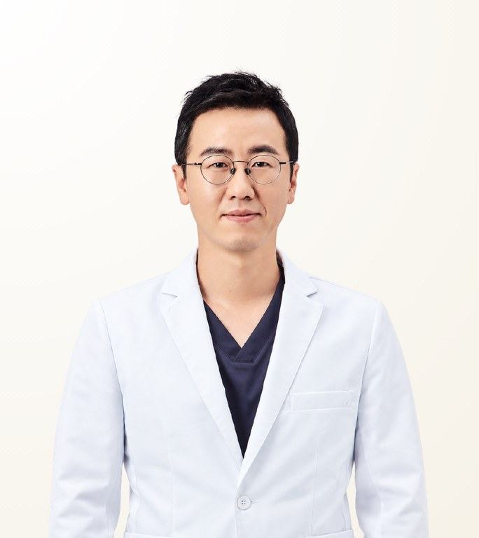

Reviewed by STMSTYLE
Kim Hak-Young
คิม ฮักยอง · 김학영
ETON Plastic Surgery · Board-certified Plastic Surgeon
- Implant-free Rhinoplasty
- Revision Rhinoplasty
- Lower Eyelid Surgery
- Experience
- 25+ years of experience
- Clinical experience
- 20,000+ cases
- Recommended Stay
- 8 days, 7 nights as standard, adjusted according to the surgery
About the Doctor
Dr. Kim Hak-Young is a board-certified plastic surgeon at ETON Plastic Surgery in Seoul, known for implant-free rhinoplasty, revision rhinoplasty and lower eyelid surgery. A graduate of Seoul National University College of Medicine, he has more than 25 years of experience and over 20,000 cases. He is particularly suited to revision and high-difficulty cases.
Case Expertise
Implant-free Rhinoplasty
Nasal height and shape are built using only the patient's own cartilage, without an artificial implant. Chosen where there is concern about implant-related complications or where the skin is thin.
Revision Rhinoplasty
Corrects shape problems, contracture and asymmetry remaining after previous nasal surgery. The material previously used and the state of the tissue are checked before the extent of revision is decided.
Lower Eyelid Surgery
Loose skin and protruding fat under the eye are addressed together to reduce shadow and lines. The fat is not simply removed but moved into the hollow so the transition looks natural.
Other treatments available
Materials & Equipment
Video
Philosophy of Care
Rather than accommodating every request unconditionally, he judges the possible scope and outcome of surgery precisely and puts completeness first. Consultation is detailed and exact, with weight on the realistic judgement that revision and high-difficulty patients need. He suits patients who prioritise a definite change and a premium standard of care over cost.
— Kim Hak-Young
STMSTYLE Assessment
STMSTYLE has worked with Dr. Kim Hak-Young for more than ten years, running several consultation events together and seeing his actual surgical results and consultation process first-hand. Precise and exacting by nature, he places the completeness of the result and his own responsibility ahead of price accessibility. STMSTYLE particularly recommends him for patients seeking a private, premium result, and for revision or high-difficulty cases.
STMSTYLECareer & Training
View full background
Education
- Graduate, Seoul National University College of Medicine
Licences & certification
- Board-certified Plastic Surgeon (Korea)
Career
- Internship and plastic surgery training, Seoul National University Hospital
- Plastic Surgeon, ETON Plastic Surgery
- Former Chief Director, Note Plastic Surgery
- Former Director, Banobagi Plastic Surgery
- Former Chief, Department of Plastic Surgery, Jincheon Sungmo Hospital
Professional memberships
- Full member, Korean Society of Plastic and Reconstructive Surgeons
- Full member, Korean Society for Aesthetic Plastic Surgery
- Full member, Korean Cleft Palate-Craniofacial Association
Frequently Asked Questions
Is Dr. Kim Hak-Young good at revision rhinoplasty?
Revision rhinoplasty is one of Dr. Kim Hak-Young's main procedures, backed by 25+ years of experience and over 20,000 cases. He checks the previous material and the state of the tissue before deciding the extent of revision. STMSTYLE particularly recommends him for revision and complex cases; the final plan is set after an in-person consultation.
What materials does Dr. Kim Hak-Young use for rhinoplasty?
Dr. Kim Hak-Young is known for implant-free rhinoplasty, building nasal height and shape with the patient's own cartilage. This approach suits patients concerned about implant-related complications or with thin skin. The right material for each patient is decided at consultation.
What kind of patients is Dr. Kim Hak-Young best suited for?
Dr. Kim Hak-Young suits patients who value the completeness of the result and a premium standard of care over cost, including those wanting a private, refined result. He gives a realistic assessment of what surgery can achieve rather than accepting every request unconditionally.
How long should I stay in Korea for surgery with Dr. Kim Hak-Young?
The standard stay is 8 days and 7 nights, adjusted according to the surgery. ETON Plastic Surgery gives a specific schedule for anaesthesia, discharge, follow-up visits, stitch removal and recovery for each procedure, so travel can be planned in advance.
Does Dr. Kim Hak-Young operate personally, and can I consult through STMSTYLE?
Yes. Dr. Kim Hak-Young performs the surgery personally as the operating surgeon. STMSTYLE, which has worked with him for over ten years and held several joint consultation events, coordinates initial consultations from Bangkok via LINE or WhatsApp. Final decisions are made after an in-person consultation with the doctor.
Sources
View sources and review record
| Item | Source | Checked |
|---|---|---|
| Plastic surgery board certification, Seoul National University education and training | Hospital and professional society official information | 2026-08-31 |
| Career at Note, Banobagi and Jincheon Sungmo Hospital, and society memberships | Public records re-checked against official materials | 2026-08-31 |
| Introduction and consultation videos | Official videos on YouTube | 2026-08-31 |
| Approach, surgical results and consultation process | STMSTYLE direct review through 10+ years of collaboration, joint consultation events and patient coordination | 2026-08-31 |
Review record · 2026-08-31
STMSTYLE reviewed Dr. Kim Hak-Young's profile through more than ten years of collaboration, in-person meetings and joint consultation events, real patient coordination and cross-checking against official hospital and professional society information.